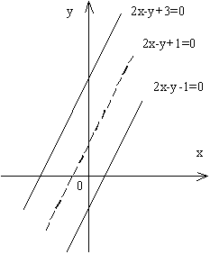

Какую линию определяет уравнение ?
РЕШЕНИЕ
Система для нахождения центра кривой в данном случае имеет
вид:

Эта система равносильна одному уравнению , следовательно, линия имеет
бесконечно много центров, составляющих прямую .
Заметим, что левая часть данного уравнения разлагается на
множители первой степени:
.
Значит, рассматриваемая линия есть пара параллельных прямых:
и .